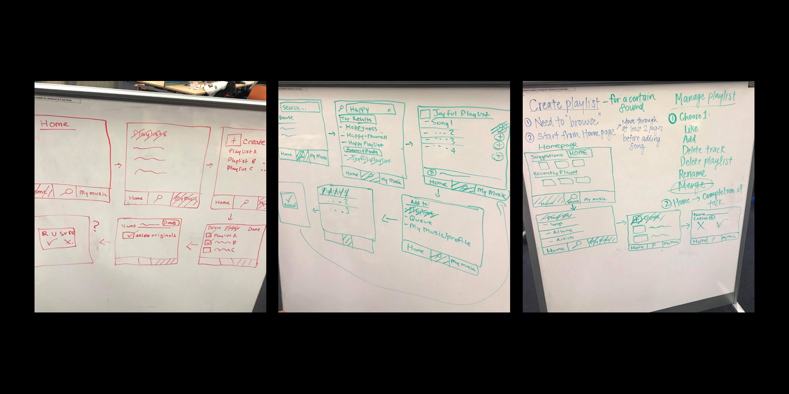

02.
Solutions
Starting from the pain point, I tried to find solutions to solve them
and introduce new features overall to improve the user experience. I
wireframed on a whiteboard with my team for quick and fast ideation.

I then took the design decisions seen in the wireframes and converted
them hi-fidelity mockups. I used Apple and Spotify design elements as
a basis for creating elegant UI.


I have separated the solutions into categories that best represents the solution.
Architecture
Overall, the main change I have made to the architecture of the application was to remove the radio and browse sections to from the main navigation and include them in the search section.
- Navigation - A new navigation bar was designed that includes only home, search, and library so that the user has enough accelerators to navigate the application while maintaining a low cognitive workload.
- Search - The new search starter page was designed to include various call to actions which include the excluded 2 sections: browse and radio. This was done to make searching more intuitive.
Function
There were a few functions I've introduced in various locations throughout the app in order to meet the pain points listed earlier.
- Merging - A merging feature in our edit playlist section was introduced in order to give users more control when creating and managing playlists. Since merging was not an available feature in all popular music apps that we analyzed, our initial thought was not clear. Do we include it in the playlists section or do we include it as an option when selecting more on a playlist? However, through further discussion, we decided to include the merging feature in the edit playlists page. Our reasoning behind this was based off the purpose of the edit playlists page. Why have a page to delete playlists when you could delete a playlist by pressing more on that playlist? It was obvious that this page was meant for users to delete multiple playlists at once. Working off this convention, we decided to use the selection feature of this page to either be for deleting or for merging.
- Music Info Swipe - A swipe function was added to a playlist/song/album header in order to provide an easy way for users to view all necessary information. With the higher priority information displayed on the first view and the less in the latter views. Quick switch between screens allowed for increased recognition rather than recall. While less information in each view allowed for decreased stimuli presented to the users' memory load.
- Search by Genres & Moods - An old function introduced by Spotify, genres & moods was added to search results as a call to action. This added feature made searching more intuitive as it made search results more selective and catered towards the keyword.
Format
Overall, there were a lot of format changes throughout the app in order to make the presented information more consistent in standards, user centered, and functional.
- Playlist description / format - It was decided to move the album picture to the left and have the text frame on the right side to create a natural flow for the user's eye. The name of the album and creator of the album would be the first immediate information that users see, then the description to further understand what kind of music is on there. This decision was based off results from user testing as it was revealed that the nature of the playlist information layout was confusing to the user.
- Home content - The homepage was redesigned to prioritize information, be user centered, and minimize cognitive workload. The home page included 'Suggested Artists,' 'Suggested Songs,' and 'New Releases.' Another change made to the homepage content was the use of 3, rather than 2, modals of information. A cut back in information to only 3 categories of information with 3 modals each proved to be concise, but power.
- Universal Pricing - To improve consistency and standards, it was decided to position all headings to the left and place playlists from only top to bottom. The decisions were based on the intuition of decreasing the users' mental effort in distinguishing the difference between headers and playlist positioning.